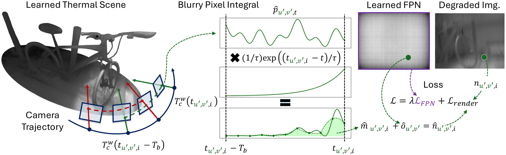
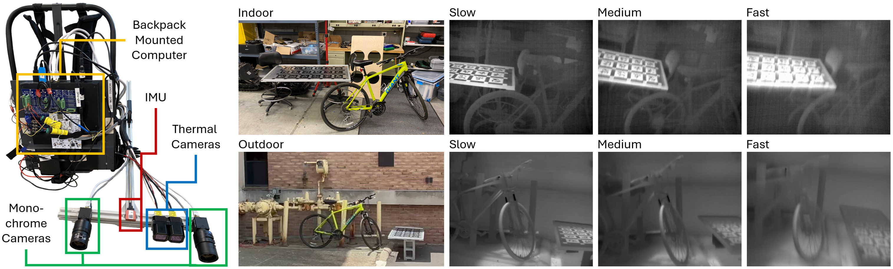

Thermal cameras offer unique detection capabilities in building inspections, search and rescue
operations, and autonomous vehicle perception. Of the different types of thermal cameras, uncooled
microbolometers are often chosen due to their relative affordability, small size, and low power consumption.
However, microbolometers suffer from motion blur, rolling shutter distortions, and fixed pattern noise,
which limit the conditions of their use. Nearly all prior methods for microbolometer image restoration
account for only one of these degradations, and current techniques addressing microbolometer blur and
rolling shutter are limited. This paper presents TRNeRF, a thermal image restoration method that jointly
addresses all three degradations by incorporating the microbolometer image formation model with Neural
Radiance Fields (NeRFs). To evaluate TRNeRF, this paper introduces a new real-world dataset that is uniquely
designed to support two novel quantitative evaluation strategies for thermal image restoration. Experiments
demonstrate that TRNeRF is able to recover sharp, global shutter, and clear thermal images, even under
extremely aggressive camera motion that causes existing methods to fail.
Rendering Pipeline
We train an accurate representation of the thermal scene by incorporating motion blur, rolling
shutter distortions, and fixed pattern noise into the NeRF rendering pipeline such that the rendered pixels
can be supervised by the real captured images subject to degradation. The left side of this figure depicts
the learned scene and the views traversed by two pixels readout at different times. The remaining sections
show how a single degraded pixel value is estimated and contributes to the loss. At the inference stage, the
augmentations to the rendering pipeline are removed and the trained model can be used to directly render
restored images.

Dataset
To collect our dataset, we designed a rig with a backpack mounted computer and hand-held sensor
platform including two microbolometer thermal cameras, two monochrome cameras, and an IMU (included for future
work). The thermal cameras are placed side-by-side to support the comparison of different camera settings. The
dataset includes a sunny outdoor scene with high thermal contrast, and an air-conditioned indoor scene with low
thermal contrast. For each scene there are three recorded sequences, denoted slow, medium, and fast, with
increasingly aggressive six degree-of-freedom camera motion.

Evaluation Methods
We introduce two novel quantitative methods for evaluating thermal
image restoration. The first method utilizes a multi-spectral Aprilgrid board that is placed in each scene. The
board can be detected in both the sharp visible spectrum images and the restored thermal images. We use the
the detections in the monochrome images to project the board's corners into the thermal images. We then compute the
percentage of successfully detected corners in the thermal images to assess how well areas of the board were
restored. The second method involves rendering pseudo ground truth images using a standard NeRF model
trained on the relatively undegraded slow sequence thermal images (following the removal of fixed pattern noise
through a two point non-uniformity correction). We compute the LPIPS metric between the restored and pseudo
ground truth images.
Detection Based Evaluation Method
Pseudo Ground Truth Based Evaluation Method
Ablation Study
Our ablation study demonstrates that it is necessary to account for
all three degradations and that seemingly subtle details can have a substantial impact on restoration
performance. In particular, onboard image filters, which were enabled by default in our thermal cameras, can
produce significant artifacts in the restored images.
Citation
@misc{trnerf2024,
title={TRNeRF: Restoring Blurry, Rolling Shutter, and Noisy Thermal Images with Neural Radiance Fields},
author={Spencer Carmichael and Manohar Bhat and Mani Ramanagopal and Austin Buchan and Ram Vasudevan and Katherine A. Skinner},
year={2024},
eprint={TODO:PLACEHOLDER},
archivePrefix={arXiv},
primaryClass={cs.CV}}